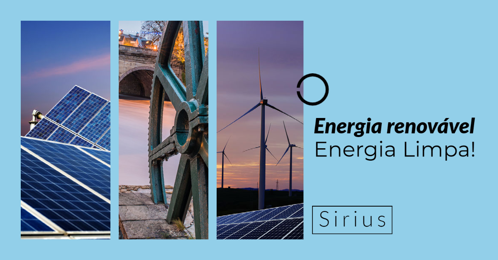

<div class="back d-block w-100">
  <div class="container">
    <div id="carouselExampleControls" class="carousel slide" data-bs-ride="carousel">
      <div class="carousel-inner">
        <div class="carousel-item active">
          
        </div>
        <div class="carousel-item">
          
        </div>
        <div class="carousel-item">
          
        </div>
      </div>
      <button class="carousel-control-prev" type="button" data-bs-target="#carouselExampleControls" data-bs-slide="prev">
        <span class="carousel-control-prev-icon" aria-hidden="true"></span>
        <span class="visually-hidden">Anterior</span>
      </button>
      <button class="carousel-control-next" type="button" data-bs-target="#carouselExampleControls" data-bs-slide="next">
        <span class="carousel-control-next-icon" aria-hidden="true"></span>
        <span class="visually-hidden">Próximo</span>
      </button>
    </div>

    </div>
  </div>
    